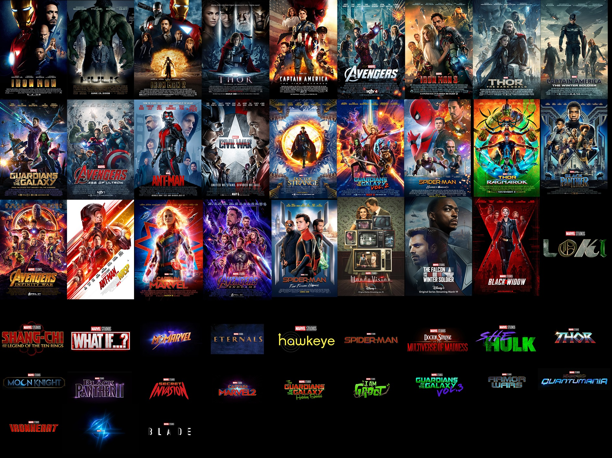

Universo cinematográfico de Marvel
El Universo cinematográfico de Marvel (MCU; en inglés, Marvel Cinematic Universe) es una franquicia de medios y un universo compartido, centrada en una serie de películas de superhéroes producidas independientemente por Marvel Studios. Las películas están basadas en personajes que aparecen en los cómics estadounidenses publicados por Marvel Comics. La franquicia también incluye series de televisión, cortometrajes, series digitales y literatura. El universo compartido, al igual que el Universo Marvel original en los cómics, se estableció mediante cruce de elementos, escenarios, elenco y personajes comunes de la trama. Las primeras tres fases de la franquicia se conocen colectivamente como «La Saga Infinity»
La Saga Infinity | |
Fase 1 |
|
Fase 2 |
|
Fase 3 |
|
Post-Saga del Infinito | |
Fase 4 |
|